I love to travel and explore different cultures. Here are some of the favorite photos of my travels so far...
August - November 2025
Scenes from Japan during my study abroad experience, it was better than I ever imagined...
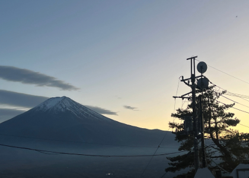
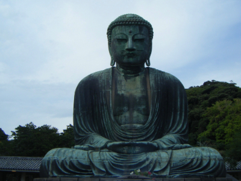
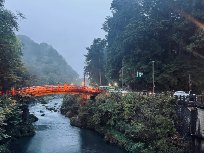
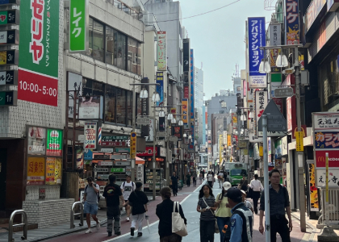
March 2025
This city was mind-blowing, so much culture and amazing skylines...
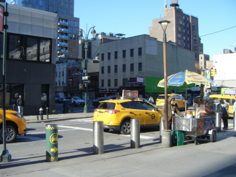
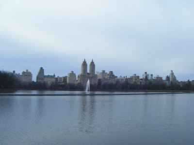
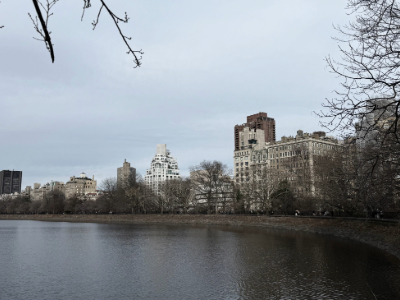
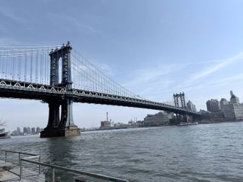
June 2025
First time in Montreal, Toronto, and Ottawa...Vancouver is next!
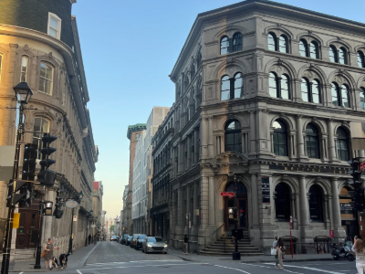
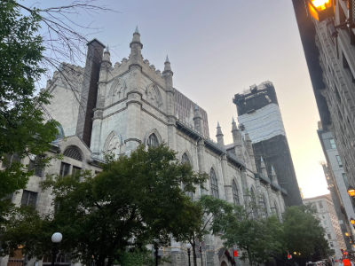
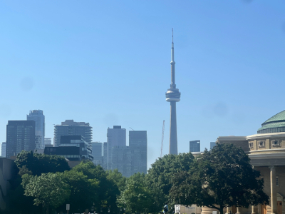
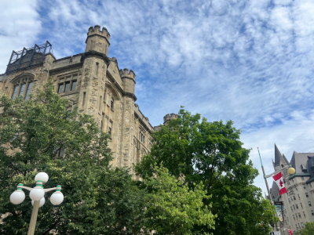